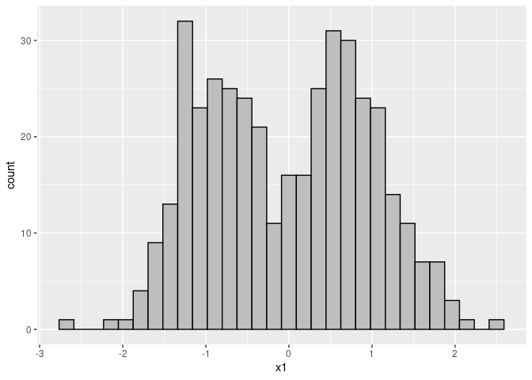

NumericTransformation
his package intends to convert categorical features into numerical ones. This will help in employing algorithms and methods that only accept numerical data as input. The main motivation for writing this package is to use in clustering assignments.
Installation
–>
You can install the development version from GitHub with:
# install.packages("devtools")
devtools::install_github("ranibasna/NumericalTransformation")Example
This is a basic example which shows you how to convert a categorical features to numerical ones:
library(ggplot2)
library(NumericTransformation)
library(dplyr)
#>
#> Attaching package: 'dplyr'
#> The following objects are masked from 'package:stats':
#>
#> filter, lag
#> The following objects are masked from 'package:base':
#>
#> intersect, setdiff, setequal, union
## basic example code
# Generate toy data with categorical and numerical columns
n <- 100
prb <- 0.5
muk <- 1.5
clusid <- rep(1:4, each = n)
x1 <- sample(c("A","B"), 2*n, replace = TRUE, prob = c(prb, 1-prb))
x1 <- c(x1, sample(c("A","B"), 2*n, replace = TRUE, prob = c(1-prb, prb)))
x1 <- as.factor(x1)
x2 <- sample(c("A","B"), 2*n, replace = TRUE, prob = c(prb, 1-prb))
x2 <- c(x2, sample(c("A","B"), 2*n, replace = TRUE, prob = c(1-prb, prb)))
x2 <- as.factor(x2)
x3 <- c(rnorm(n, mean = -muk), rnorm(n, mean = muk), rnorm(n, mean = -muk), rnorm(n, mean = muk))
x4 <- c(rnorm(n, mean = -muk), rnorm(n, mean = muk), rnorm(n, mean = -muk), rnorm(n, mean = muk))
x <- data.frame(x1,x2,x3,x4)
summary(x)
#> x1 x2 x3 x4
#> A:225 A:200 Min. :-4.373129 Min. :-5.4085
#> B:175 B:200 1st Qu.:-1.579310 1st Qu.:-1.5653
#> Median :-0.019632 Median : 0.0709
#> Mean : 0.002537 Mean :-0.0500
#> 3rd Qu.: 1.569295 3rd Qu.: 1.4859
#> Max. : 5.088596 Max. : 4.6016
# converting the numerical data using UFT_func
x_converted_data <- UFT_func(x, Seed = 22)
#head(x_converted_data)
# bined with the rest of the data
x_converted_data_all <- bined_converted_func(converted_data = x_converted_data, original_data = x)
head(x_converted_data_all)
#> x1 x2 x3 x4
#> 1 0.4696940 0.67097741 -2.2041043 -2.9961773
#> 2 2.1556880 1.82202244 -2.0884854 -1.7169644
#> 3 1.3246744 -0.02304501 -1.8149687 -1.4348445
#> 4 0.9224804 -1.00875961 0.1847771 -0.2334640
#> 5 0.6402326 1.23647429 -3.6329444 -1.9209723
#> 6 1.8029492 -0.56878058 0.5659637 0.2912137
x_converted_data_all <- x_converted_data_all %>% dplyr::mutate(id = row_number())
head(x_converted_data_all)
#> x1 x2 x3 x4 id
#> 1 0.4696940 0.67097741 -2.2041043 -2.9961773 1
#> 2 2.1556880 1.82202244 -2.0884854 -1.7169644 2
#> 3 1.3246744 -0.02304501 -1.8149687 -1.4348445 3
#> 4 0.9224804 -1.00875961 0.1847771 -0.2334640 4
#> 5 0.6402326 1.23647429 -3.6329444 -1.9209723 5
#> 6 1.8029492 -0.56878058 0.5659637 0.2912137 6
# plotiing
# adding old non-numerical features
x_converted_data_all$x1_old <- x$x1
ggplot(x_converted_data_all, aes(x=id, y=x1, color=x1_old)) + geom_point()
ggplot(x_converted_data_all, aes(x=x1), color=x1_old) + geom_histogram(bins = 30, color = "black", fill = "gray") 
to see clusters
n <- 100
prb <- 0.9 # we put the prb to 0.9 for clear clusters
muk <- 1.5
clusid <- rep(1:4, each = n)
x1 <- sample(c("A","B"), 2*n, replace = TRUE, prob = c(prb, 1-prb))
x1 <- c(x1, sample(c("A","B"), 2*n, replace = TRUE, prob = c(1-prb, prb)))
x1 <- as.factor(x1)
x2 <- sample(c("A","B"), 2*n, replace = TRUE, prob = c(prb, 1-prb))
x2 <- c(x2, sample(c("A","B"), 2*n, replace = TRUE, prob = c(1-prb, prb)))
x2 <- as.factor(x2)
x3 <- c(rnorm(n, mean = -muk), rnorm(n, mean = muk), rnorm(n, mean = -muk), rnorm(n, mean = muk))
x4 <- c(rnorm(n, mean = -muk), rnorm(n, mean = muk), rnorm(n, mean = -muk), rnorm(n, mean = muk))
x <- data.frame(x1,x2,x3,x4)
# converting the numerical data using UFT_func
x_converted_data <- UFT_func(x, Seed = 22)
#head(x_converted_data)
# bined with the rest of the data
x_converted_data_all <- bined_converted_func(converted_data = x_converted_data, original_data = x)
head(x_converted_data_all)
#> x1 x2 x3 x4
#> 1 0.5482406 -0.9598341 -0.6721997 -1.3640539
#> 2 2.1293284 0.6497559 -3.4891224 -1.2824085
#> 3 1.3500223 1.8238219 -1.8073841 -0.7831971
#> 4 0.9728537 -1.1876765 -3.3130884 -1.2942845
#> 5 -1.4094992 -0.9161744 -2.8428968 0.3910824
#> 6 0.7081679 -0.6321053 -0.9697318 -1.5089555
# plotiing
x_converted_data_all <- x_converted_data_all %>% mutate(id = row_number())
# adding old non-numerical features
x_converted_data_all$x1_old <- x$x1
ggplot(x_converted_data_all, aes(x=id, y=x1, color=x1_old)) + geom_point()
ggplot(x_converted_data_all, aes(x=x1), color=x1_old) + geom_histogram(bins = 30, color = "black", fill = "gray")